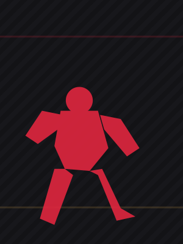

From the youngest signee to a six-fight win streak
One loss in fourteen fights, and a first main event that only made the resume more complicated to solve.
9 min readSep 2026
Raul Rosas Jr.'s career arc — from the youngest fighter ever signed to the UFC at 17 to a come-from-behind stoppage win in his first main event at 21.

From a Contender Series win at 17 to headlining a UFC card down on every scorecard — four years, mapped fight by fight.

Defeated Mando Gutierrez at 17 years, 11 months old to become the youngest athlete ever signed to the UFC.
Submitted Jay Perrin at UFC 282, becoming the youngest person ever to win inside the Octagon.
Dropped a unanimous decision to Christian Rodriguez at UFC 287 — his only career defeat.
Rattled off finishes and decisions over Terrence Mitchell, Ricky Turcios, Aoriqileng, and Vince Morales, then closed the run with a decision over former title challenger Rob Font at UFC 326.
Trailed on all three scorecards through four rounds before stopping Raoni Barcelos in round five, extending his streak to six.
One loss in fourteen fights, and a first main event that only made the resume more complicated to solve.
A 22-6 veteran took a 21-year-old phenom to the brink. The next step up won't get easier.
The math on Rosas Jr.'s two-year window just got a lot more interesting.
Coaching adjustments and in-fight reads that shaped these career turns.
Read Corner Notes